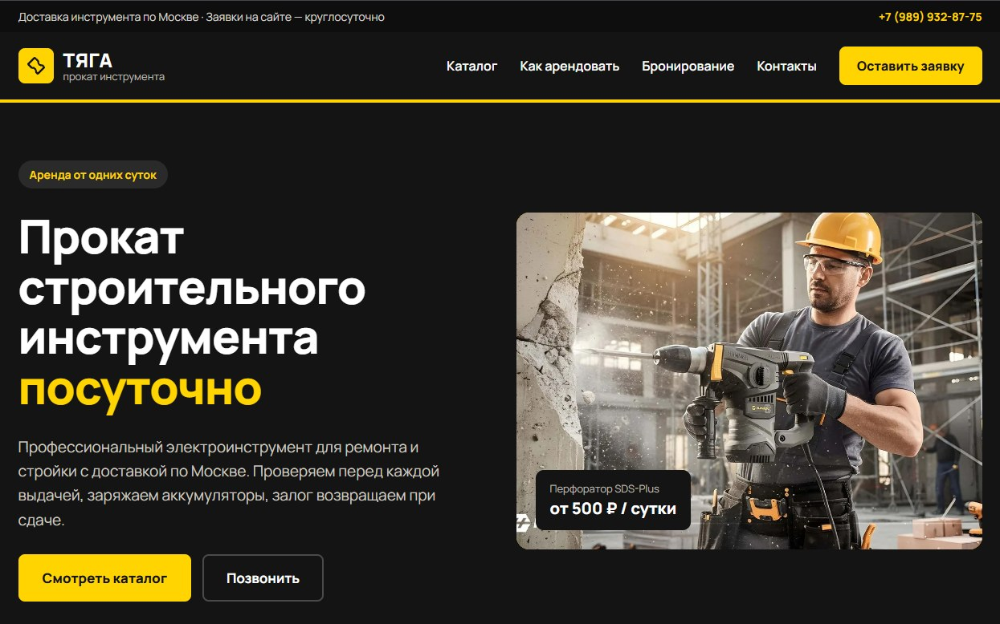
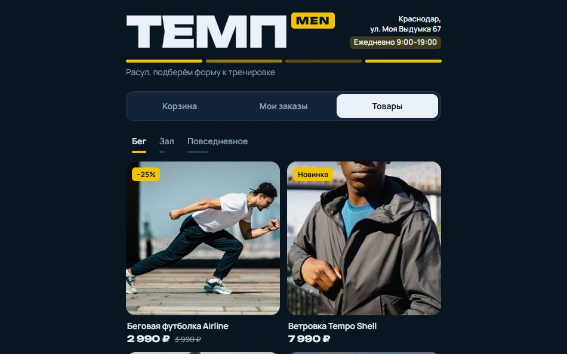

Сайты и CRM для автоматизации бизнеса
Зарабатывайте больше, не теряя покупателей из-за путаницы в чатах. База клиентов и учет товаров в одном месте помогут закрывать сделки быстрее и возвращать клиентов снова.
Посмотреть готовые сайты-
Рост конверсии в 3–7 раз
Лендинг бьёт точно в цель: снижает стоимость лида и выжимает максимум из каждого рекламного рубля.
-
0% упущенных клиентов
Встроенная CRM фиксирует 100% обращений за 1 секунду. Никакого человеческого фактора и забытых заказов.
-
До 70% экономии времени
Автоматический учёт остатков и аналитика заменяют ручную рутину, освобождая часы на реальное масштабирование.
Выберите тип сайта
ПометкаЭто демо-версии: компании на них вымышленные, но весь функционал работает по-настоящему. Нажмите на сайт, чтобы узнать, что он умеет.

Одностраничный сайт
Вся информация о бизнесе на одной странице, приём заявок по электронной почте.
- Малому бизнесу и сфере услуг. Быстрый старт для привлечения клиентов на конкретную услугу: ремонт, бьюти-сфера, консалтинг, обучение.
- Тестированию новых ниш и продуктов. Минимальные вложения, чтобы проверить спрос на товар или запустить сезонную акцию.
- Экспертам и специалистам. Для презентации личного бренда, продажи курсов, вебинаров или записи на консультации.

Готовый Онлайн-Магазин
Онлайн-магазин с функциями управления складом, коммуникации с клиентами и распределения сотрудников.
- Производителям и брендам. Для выхода на прямые продажи (D2C), минуя маркетплейсы, и создания сильного имиджа компании.
- Торговому бизнесу с широким ассортиментом. Для тех, у кого десятки, сотни или тысячи товаров, требующих чёткой структуры, категорий и фильтров.
- Растущему бизнесу. Для предпринимателей, которые переросли продажи в соцсетях и хотят автоматизировать продажи, склад и аналитику в одном месте.